不只是知見，要勤修方便
諸子方能自然安隱出殼
在進入經文前，用一個關鍵詞寫下你對「修行」的第一直覺
佛在拘留國，對比丘宣說 ——
漏盡解脫的條件 ＝ 知見 ＋ 勤修
拖動滑桿揭露 ——「只有知見」vs「知見＋修習」
← 拖動滑桿揭露 →
「此色，此色集，此色滅。此受……想……行……識……」
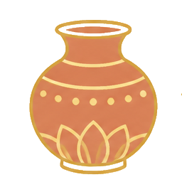
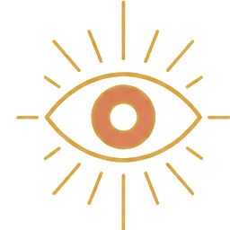
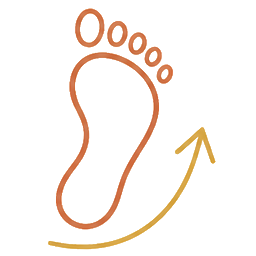
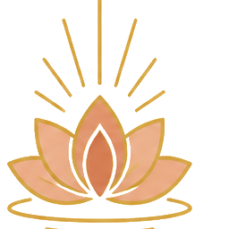
五蘊各依「此 → 集 → 滅」三相觀照，是修念處的所緣
「謂修念處、正勤、如意足、根、力、覺、道」
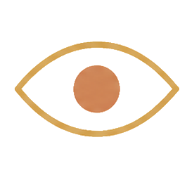
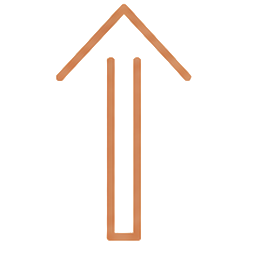
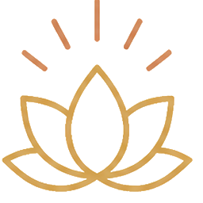
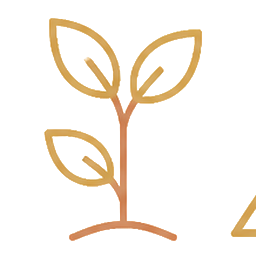
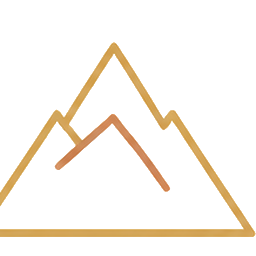
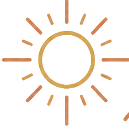
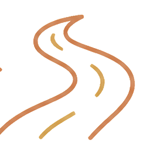
4 + 4 + 4 + 5 + 5 + 7 + 8 = 三十七道品
如是比丘精勤修習，隨順成就，
不自知見今日爾所漏盡、明日爾所漏盡，
然彼比丘知有漏盡 —— 以修習故。
譬：漏盡是潛移默化、不待自覺的成就，唯修方至
如是比丘精勤修習，隨順成就，
一切結、縛、使、煩惱、纏，
漸得解脫 —— 善修習故。
譬：煩惱結纏，隨修習之風日漸自落
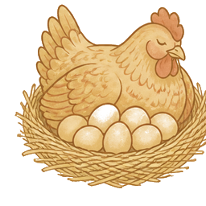
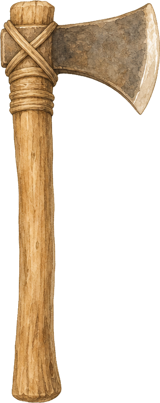
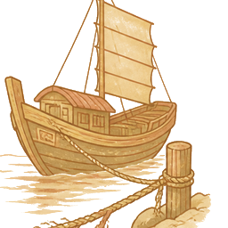
三譬同詮 · 勤修方便，自然漏盡。
點選一個，看看大家的選擇
說是法時，諸比丘聞佛所說，歡喜奉行。
— 雜阿含經 263 經・終 —